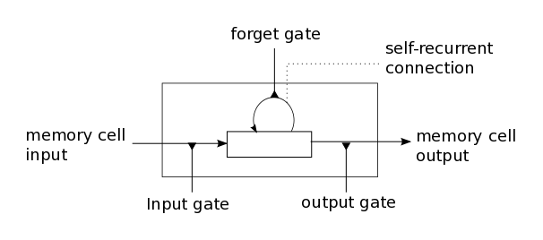

This seems great, but in practice RNN barely works due to exploding/vanishing gradient, which is cause by a series of multiplication of the same matrix. On the other side, it also have the problem of long-term dependencies. To solve this, we can use a variation of RNN, called long short-term memory (LSTM), which is capable of learning long-term dependencies.
sigmoid - gate function [0, 1], tanh - regular information to [-1, 1]

The sigmoid layer outputs numbers between zero and one, describing how much of each component should be let through. A value of zero means "let nothing through," while a value of one means “let everything through!”
The math behind LSTM can be pretty complicated, but intuitively LSTM introduce
- input gate
- output gate
- forget gate
- memory cell (internal state)

The cell state is kind of like a conveyor belt. It runs straight down the entire chain, with only some minor linear interactions. It's very easy for information to just flow along it unchanged.
LSTM resembles human memory: it forgets old stuff (old internal state forget gate) and learns from new input (input node input gate)

LSTMs also have this chain like structure, but the repeating module has a different structure. Instead of having a single neural network layer, there are four, interacting in a very special way.

Step-by-Step LSTM Walk Through

At first, we apply Forget gate: , caculate what information we should forget for previous information

The next step is to decide what new information we're going to store in the cell state.
- Input gate: , a sigmoid layer decides which values we’ll update.
- A tanh layer creates a vector of new candidate values: , that could be added to the state.

Then we update Memory cell C: ,
We multiply the old state by , forgetting the things we decided to forget earlier. Then we add . This is the new candidate values, scaled by how much we decided to update each state value.

This output will be based on our cell state, but will be a filtered version.
- First, we run a Output gate: , which decides what parts of the cell state we’re going to output, .
- Then, we put the cell state through tanhtanh (to push the values to be between ) and multiply it by the output of the sigmoid gate, so that we only output the parts we decided to:
Why solve vanishing gradient?
Details from here
- The additive update function for the cell state gives a derivative thats much more ‘well behaved’
- The gating functions allow the network to decide how much the gradient vanishes, and can take on different values at each time step. The values that they take on are learned functions of the current input and hidden state.
(Optional) Implementation
FIXME Remove redundant codes
Part of the codes demonstrating LSTM
Note: activation='tanh', recurrent_activation='hard_sigmoid'
self.kernel = self.add_weight( shape=(input_dim, self.units * 4), name="kernel", initializer=self.kernel_initializer, regularizer=self.kernel_regularizer, constraint=self.kernel_constraint, ) self.recurrent_kernel = self.add_weight( shape=(self.units, self.units * 4), name="recurrent_kernel", initializer=self.recurrent_initializer, regularizer=self.recurrent_regularizer, constraint=self.recurrent_constraint, ) self.kernel_i = self.kernel[:, : self.units] self.kernel_f = self.kernel[:, self.units : self.units * 2] self.kernel_c = self.kernel[:, self.units * 2 : self.units * 3] self.kernel_o = self.kernel[:, self.units * 3 :] self.recurrent_kernel_i = self.recurrent_kernel[:, : self.units] self.recurrent_kernel_f = self.recurrent_kernel[:, self.units : self.units * 2] self.recurrent_kernel_c = self.recurrent_kernel[:, self.units * 2 : self.units * 3] self.recurrent_kernel_o = self.recurrent_kernel[:, self.units * 3 :] x_i = K.dot(inputs_i, self.kernel_i) x_f = K.dot(inputs_f, self.kernel_f) x_c = K.dot(inputs_c, self.kernel_c) x_o = K.dot(inputs_o, self.kernel_o) i = self.recurrent_activation(x_i + K.dot(h_tm1_i, self.recurrent_kernel_i)) f = self.recurrent_activation(x_f + K.dot(h_tm1_f, self.recurrent_kernel_f)) c = f * c_tm1 + i * self.activation(x_c + K.dot(h_tm1_c, self.recurrent_kernel_c)) o = self.recurrent_activation(x_o + K.dot(h_tm1_o, self.recurrent_kernel_o))Take an example here:
# LSTM for sequence classification in the IMDB dataset import numpy from keras.datasets import imdb from keras.layers import LSTM, Dense from keras.layers.embeddings import Embedding from keras.models import Sequential from keras.preprocessing import sequence # fix random seed for reproducibility numpy.random.seed(7) # load the dataset but only keep the top n words, zero the rest top_words = 5000 (X_train, y_train), (X_test, y_test) = imdb.load_data(num_words=top_words) # truncate and pad input sequences max_review_length = 500 X_train = sequence.pad_sequences(X_train, maxlen=max_review_length) X_test = sequence.pad_sequences(X_test, maxlen=max_review_length) # create the model embedding_vecor_length = 32 model = Sequential() model.add(Embedding(top_words, embedding_vecor_length, input_length=max_review_length)) model.add(LSTM(100)) model.add(Dense(1, activation="sigmoid")) model.compile(loss="binary_crossentropy", optimizer="adam", metrics=["accuracy"]) print(model.summary()) model.fit(X_train, y_train, epochs=3, batch_size=64) # Final evaluation of the model scores = model.evaluate(X_test, y_test, verbose=0) print("Accuracy: %.2f%%" % (scores[1] * 100))- Shapes
- The output shape of the Embedding layer is (?, 500, 32).
- : (?, 100)
- : (?, 100)
The calculation for forget gate is composed of:
- Shapes
Summary
- LSTM uses a "conveyor belt" to get longer memory than SimpleRNN.
- Each of the following blocks has a parameter matrix:
- Forget gate.
- Input gate.
- New values.
- Output gate.
- Number of parameters: